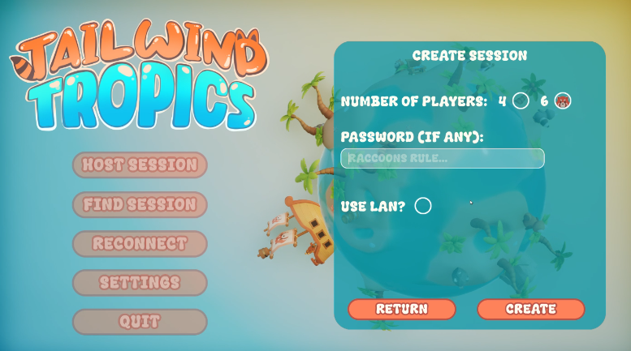
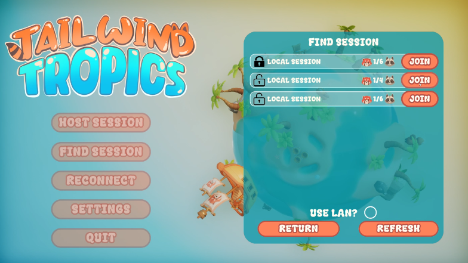
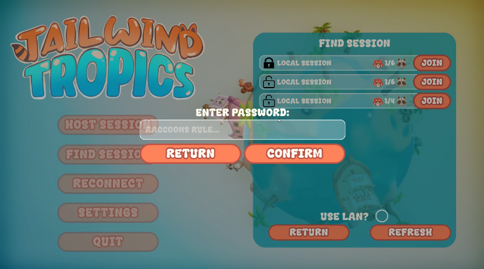
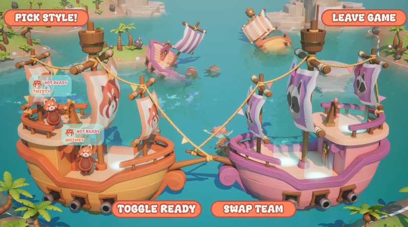
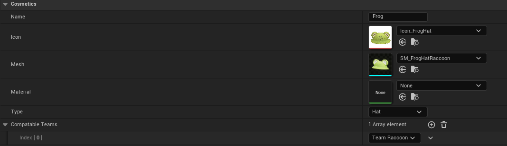
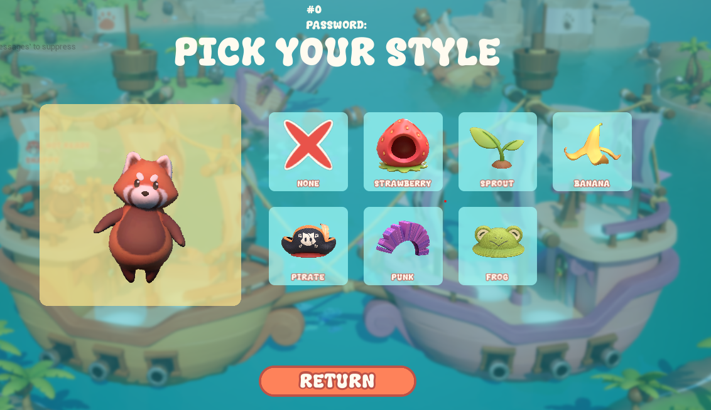
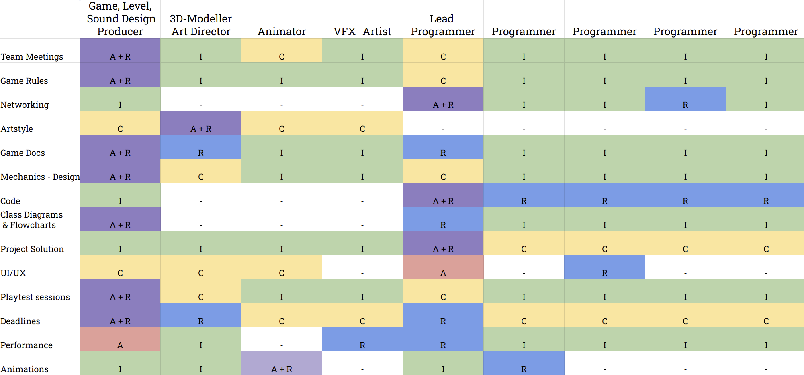

"Tailwind Tropics is a stylized, 3D, round-based team party game where you collect, construct and combat each other in order to claim the title of “Island Masters”! Scour the tropical islands in search of materials to use in construction of your team's battleship and then duke it out on the open seas! You battle for the sake of battle and play against friends, enemies and frenemies. Tailwind tropics is a true showcase of the long standing feud between the Puckish Pandas and Raccoon Rascals and their crazy competitions."
This game was developed over 9 weeks as part of my studies at Stockholm University and served as an introduction to multiplayer game development. Through this project, I significantly expanded my knowledge of Unreal Engine 5 while gaining a deeper understanding of the complexities involved in multiplayer implementation. I became familiar with key concepts such as NetMode, Replication, RPCs, Steam integration, and more, which provided valuable insights into the challenges and intricacies of developing multiplayer experiences.
My contribution to the code mostly lays in everything before the actual game starts. That would be things such as handling the servers, joining/creating sessions, lobby and cosmetic selection.
| Game Engine | Unreal Engine 5.4 |
|---|---|
| Version Control | GitHub |
| IDE | JetBrains Rider |
| Platform | Windows |
| Steam | Steam Page |
| Development Duration | 9 weeks |
|---|---|
| Time of Development | Fall 2024 |
| Number of Developers | 9 |
| My Role | Lead Programmer |
From the start, we knew we wanted to make a multiplayer game, but multiplayer can be implemented in many different ways, each with its own pros and cons. One of the first big decisions we had to make was which NetMode to use. For us, it mainly came down to two options:
The main advantage of using a listen server was that it required no server or additional costs. It also made development and testing much easier since we wouldn’t need an external server running to play the game.
The dedicated server approach would solve one of the biggest drawbacks of a listen server, if the host disconnects or leaves, the entire session is lost. That’s obviously not ideal, especially for a somewhat competitive game like ours. However, we felt that our game leaned more towards a party-game vibe rather than a fully competitive experience, so we were willing to accept this tradeoff.
Another advantage of dedicated servers is greater control over the session, allowing us to mitigate cheating more effectively since the server wouldn’t be running on a client machine.
Ultimately, the lack of server upkeep was a major factor in our decision. The benefits of dedicated servers felt more suited to a highly competitive game, which didn’t fully align with our vision.
That said, we still wanted to keep the door open for dedicated servers in the future, so we’ve made sure to structure our implementation in a way that would make the transition easier if we decide to go down that path. For now, we’ve chosen to go with a listen server approach.
As for connecting players we wanted to use Steam. We made use of a Plugin made by "mordentral" which adds on Steam connectivity to Unreals already existing multiplayer functionality.
For creating sessions that clients could join, we used the previously mentioned Plugin, specifically the Create Advanced Session node. This gave us control over the maximum number of players in a lobby, allowing us to support both 2v2 and 3v3 matches.
The Extra Settings input also allowed us to add a unique ID to each session, as well as the option to set a password. This made private sessions possible and helped us differentiate between sessions when multiple were running at the same time.
The node used from the plugin to create a session
The interface the player is presented with when creating a session
When implementing the functionality for joining I first made sure that I could find all available session that I can join and add a widget-entry for each of them. This was first met with a weird issue, we'd find sessions that wasn't really joinable, which of course created further problems. What we found was that due to us using a designated network ID for connecting via Steam we were not the only ones using it, which made us find a bunch of very much unjoinable sessions. The solution for us was to create an unique property string for the sessions that acted as an identifier for our game. When we then went through all of the found sessions we could look for this string and ignore all the ones not having it.
When searching for session the player is presented with all available options in a server list. This list will display things such as number of player currently in the session and if it's password protected or not. When pressing "Join" on a password protected session you're prompted to type in a password, which if correct lets you join. Once joined you're then asked to pick a team and once that is done you're part of the squad and ready to play!
The code for sifting through the sessions in search for our sessions
The list of the sessions found
The password prompt when joining a password protected session
To enable LAN we simply had to give the player the option for it in both the creating and joining of sessions, then pass that through to the previously discussed nodes. One of the main differences that this presented was that we had no way of using the Steam functionalities in LAN. This was mainly noticeable with the player names and avatars both in the lobby but also in-game. Our solution to this was to give the players a random name from a predefined list, and a basic avatar depending on team. This approach allowed us to not only have fun with name choices but also give us control over what's shown compared to allowing the player to pick the name.
The lobby with two players joined over LAN, showing randomly generated names and team avatars
We wanted cosmetics for two main reasons: firstly, as a way for the player to express themselves through the character, and secondly, as a type of unlockable, either through achievements or microtransactions.
With this in mind I set out a few initial goals for the implementation, those were:
Data tables seemed to fit my needs quite well, they made it simple to add new entries and also were easy to access and grab data from. So to start of I hade to define what type of variables my cosmetics should contain, with regard to future types as well my entry struct ended up looking like this:
USTRUCT(BlueprintType)
struct FCosmeticOption : public FTableRowBase
{
GENERATED_BODY()
UPROPERTY(EditAnywhere, BlueprintReadWrite, Category = "Cosmetics")
FString Name;
UPROPERTY(EditAnywhere, BlueprintReadWrite, Category = "Cosmetics")
UTexture2D* Icon;
UPROPERTY(EditAnywhere, BlueprintReadWrite, Category = "Cosmetics")
UStaticMesh* Mesh;
UPROPERTY(EditAnywhere, BlueprintReadWrite, Category = "Cosmetics")
UMaterialInterface* Material;
UPROPERTY(EditAnywhere, BlueprintReadWrite, Category = "Cosmetics")
ECosmeticType Type;
UPROPERTY(EditAnywhere, BlueprintReadWrite, Category = "Cosmetics")
TArray CompatableTeams;
FCosmeticOption()
: Name(TEXT("Default"))
, Icon(nullptr)
, Mesh(nullptr)
, Material(nullptr)
, Type(ECosmeticType::DEFAULT)
, CompatableTeams({ ETeams::NONE })
{}
};
With this struct I can edit things such as the look and metadata of the cosmetic but also tell what team it's for and what type of cosmetic I'm working with. As for now we're only using hats, but we're considering other options as well, so it felt appropriate to take that into regard. With this as the Row Type for the data table it ends up looking like this with some of the values filled in for a complete entry:
A complete entry in the data table
Considering that the "implementor" only has to add an entry to the table and put in the relevant variables I felt like this achieved both of my first tow goals for this implementation!
This data table is then read from the widget handling the cosmetic selection and it adds an entry for it. The entry in this case is simply a blueprint for where I can put all the items information and display it for the player, it also acts as button to signal what cosmetic was picked.
An empty cosmetic entry
All these entries are added to the cosmetic selection window and placed in a grid panel, which with some tweaking ensures that they all fit and aligned in the correct way.
Cosmetics selection widget with all entries added
You might have noticed the cute panda in the picture above, that's my approach of achieving the third goal I set out for: "It needs to be clear feedback to the player when selecting the cosmetic".
When selecting an option among the cosmetics it is not only shown directly on the panda in the frame, but also on the panda in the level so that all the other players can see what you're picking.
You might notice it in the GIF below, if you look at the panda on the boat in the back as well!

Selecting a cosmetic and seeing it applied in real-time
This was done with the use of a SceneCaptureComponent2D which I attached to the characters on the boats. I use this component to record the critters and then display that image in the widget, and to make sure only the character is displayed I made a render target and assigned it to the capture component. The only thing left to do was then to put the hat on the actual character and voila! It was display in the selection screen as well!
The final result of the cosmetic selection felt complete, I've achieved the goals I initially set out for myself and I've also made it adaptable for future changes as well. The whole "selection loop" would look something like this:
Full cosmetic selection process from choosing to seeing it in-game
As the lead programmer I had a few additional reasonabilities beyond contributing to the coding of the game. These would be:
Early on we made use of a tool, RACI, to ensure that everyone knew which parts of the game they were responsible for. It also helped to not bombard everyone with everything concerning decisions that had to be made for the game. I for example didn't need to be informed about artstyle decisions made as it doesn't really effect me or any programmers work. The RACI table we made looked like this:
RACI table for Tailwind Tropics
When the project started we followed a specific style guide to ensure that everyone worked in a similar manor. This style guide was based on one made by another Github user named "Allar" and was of great help for specifically giving good naming conventions for each type of asset. It gave us a table like this to follow when unsure:
| Asset Type | Prefix | Suffix |
|---|---|---|
| Blueprint | BP_ | |
| Blueprint Component | BP_ | Component |
| Widget Blueprint | WBP_ |
I made use of this predefined style guide and adjusted it to fit our project. Meaning that I abbreviated relevant information and changed project structure to better fit a smaller project rather, like ours.
To keep the project structured throughout our time working on it I conducted code reviews where we among other things looked over naming conventions and file structure.
Another tool we used was Trello. We used it for assigning specific task to specific people during a given sprint. Each sprint in our case would be until the next deadline which usually was 1-2 weeks in-between. This was a great way to get an overview of what had to be done, which in turn made it much easier to delegate the tasks according to priority and who was the best fit for it.
As my first multiplayer game I learned a lot of new concepts and terms, such as: RPC, NetMode, Relevancy, Net Cull Distance, Reliable/Unreliable replication, ownership and replication in general are just a few among many! Needless to say this project have been a big learning experience for me as I now have a good understanding of these concepts.
The multiplayer approach in many ways forced me to get a better understanding of how things actually worked "under the hood" in order to get ensure replication as well as to reduce lag or package loss. Now after the project is done I feel like it gave me much better knowledge about the intricacies of Unreal and I feel a lot more comfortable for projects to come!
Our team was a joy to work with and everyone was cooperative and eager to learn/contribute, for this I'm very grateful! We made use of a more structured approach, RACI, this time around concerning individual responsibilities. This tool (or similar) is something I'd like to incorporate in future projects as well, where I work with larger teams. As I believe it helped everyone with staying focused on their part of the game more easily.
A takeaway I have for future projects is the importance of having a good understanding of the "needs" of an implementation. I might implement the most awesome pathfinding algorithm ever for an enemy, but if it turns out the enemy can teleport then what's the point? (We have no enemies, dodged a bullet on that one...) To first have a good understanding of something not only reduces the amount of potentially unnecessary work, but it also enables you to better plan ahead for future changes, which is great!